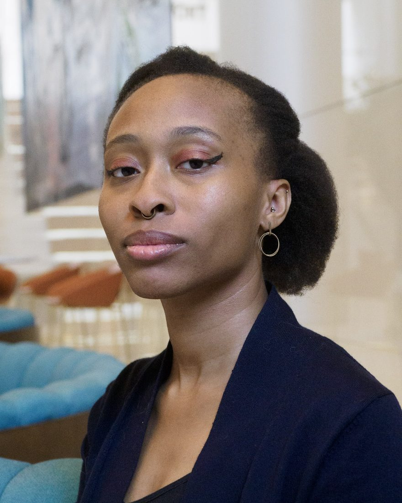

2018 — 2020
MA, Mass Communication
Valenti School of Communication, University of Houston
Internal communications and change
Seven years in communications, nearly five of them in internal and corporate communications. I help leaders explain complicated decisions so employees understand them on the first read, and I measure what lands so I know what to change.

I work with leaders, legal, HR, and People teams to plan internal communications, explain change, and keep employees informed without burying them. I listen before I recommend anything, write in the voice of the person who will deliver the message, and make sure every message is accurate and easy to understand.
A lot of that work has been on difficult topics, like retirement plans, total rewards, pay transparency, and corporate transactions. People rarely want to read about these, and they still have to understand them well enough to act. The subject changes from client to client, but the job stays the same. I decide what people need to hear and when, and then I say it plainly.
— Present
Atelier Actara
Houston, TX
Fashion show management platform. Two-person founding team.
—
Aon
Houston, TX
Client-facing change and employee communication at enterprise scale.
—
Advanced Diagnostics Healthcare System
Houston, TX
—
Valenti School of Communication
Houston, TX
—
Glass Mountain Literary Journal
Houston, TX
A national distribution network
Field research, five sites
The company was reviewing its total rewards to find out whether employees were actually using the programs it paid for. I visited five sites and ran group interviews with ten to twenty people at a time, asking what they understood about the insurance and benefits available to them.
Nearly everyone I spoke to was unwired, meaning warehouse staff without regular computer access at work. The programs were available to them on paper but hard to use in practice. Hours varied, the language around insurance took real effort to understand, and learning about any of it meant giving up unpaid personal time. Acting on it meant stepping away from a job where the work doesn’t stop.
Employees who looked into it anyway often waited on hold for a long time and came away more confused, which a warehouse shift doesn’t leave room for. Some had given up. Others, mostly younger employees, had turned down coverage without ever having anyone on site to talk it through with. The employees who did know the programs well had specific, useful criticism, and I made sure it reached the employer.
An HR presence at every site would have solved much of this, but it was never going to be funded. So I focused the recommendations on what could change, which was how information reached people in the first place and which channels worked for each part of the workforce.
The review started as a question about how many people were using the programs. The fieldwork showed that low use came from friction in a benefits process designed for a workday the warehouse staff didn’t have.
Summary Field research with frontline populations, audience segmentation, and recommendations scoped to what the organization could realistically do.
Atelier Actara
Co-founder, communications
It’s just me and my co-founder. My co-founder builds the product, and I’m responsible for everything the company says.
The product existed before the voice did, and the early copy filled space without saying anything consistent. I went through all of it and rewrote it against a defined voice, covering what the company sounds like, what it doesn’t sound like, and the rules that will hold once other people start writing.
I also run our social media, write the product copy, and wrote the templates for the emails customers receive when they join, get added to a show, or are notified about a new open show. Even at this size, much of the work is deciding what people need to hear and when. Because I write every week, the standards get tested against real work instead of sitting in a document.
I use Claude for first drafts and to try different tones before I choose a direction, and Claude Code to make wording changes on our homepage and app. Those changes go through pull requests on GitHub, and I review every one, along with every post and email, before anything goes live.
Summary Brand voice and messaging from zero, editorial standards built to work for other writers, and AI-assisted drafting with a person accountable for every word.
A multinational financial services firm
Employee sentiment
I designed and ran interviews with the leadership team, then pulled the responses together into findings the executive sponsor could act on.
The first read-out didn’t land the way it needed to. It carried so much detail from the interviews that the conversation drifted toward individual comments instead of the decisions the team had to make.
So I rebuilt it around themes and what they meant for the business, at the level the sponsor worked at, and organized it around what the company could do next.
Summary Interview design and synthesis, executive stakeholder management, and knowing when findings are being heard as a list instead of a direction.
2018 — 2020
Valenti School of Communication, University of Houston
2014 — 2017
Valenti School of Communication, University of Houston
Minor in Psychology Cum Laude
I’m always glad to talk about internal communications, change, and how a growing company keeps people informed without burying them. Email is the fastest way to reach me.